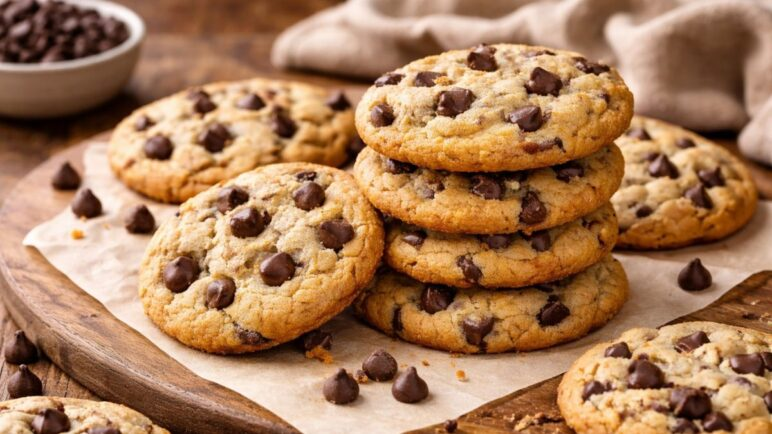

Mis recetas favoritas
Galletas con chispas de chocolate

A continuación encontrarás la receta paso a paso junto con sus ingredientes para poder
realizar estas
deliciosas galletas de mantequilla con chispas de chocolate, hechas al horno.
Ingredientes:
- Harina (2 tazas)
- 2 huevos
- 150 gramos de mantequilla (a temperatura ambiente)
- 1 taza de azúcar
- 1 pisca de sal
- 1 cucharada de polvo para hornear
- Media cucharada de bicarbonato de sodio
- Chispas de chocolate al gusto
Elementos de cocina:
- Un tazón o un bowl grande
- Un tazón o un bowl mediano
- Una espátula de madera
- Guantes (opcional)
- Una bandeja de metal
- Papel mantequilla de cocina
Procedimiento
- Comenzaremos utilizando el tazón o bowl grande, y añadiremos la mantequilla a tempertura ambiente y
el
azúcar y vamos a mezclarlos hasta que no de distinga el azúcar de la mantequilla. Pueden mezclarse
con la
espátula, o ponerse los guantes y mezclarlos con las manos. Debe quedar de una textua cremosa.
- Ahora añadiremos a esta mezcla los dos huevos y mezclaremos con la espátula o con las manos hasta
integrar
bien.
- En el tazón mediano, ahora vamos a mezclar con la espatula todos los ingredientes secos muy bien.
Luego esta
mezcla la añadiremos al tazón grande
- Ahora integraremos las chispas de chocolate a la masa. Luego formaremos unas bolitas del tamaño en
que
prefiera.
- En la bandeja de metal, colocaremos el papel antequilla que cubra todo y colocaremos
proporcionalmente las
bolitas de masa que quepan. Esto lo colocaremos dentro del horno peviamente calentado a 180 grados y
las
dejaremos durante 15 minutos.